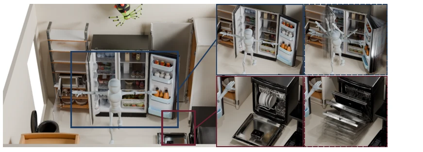
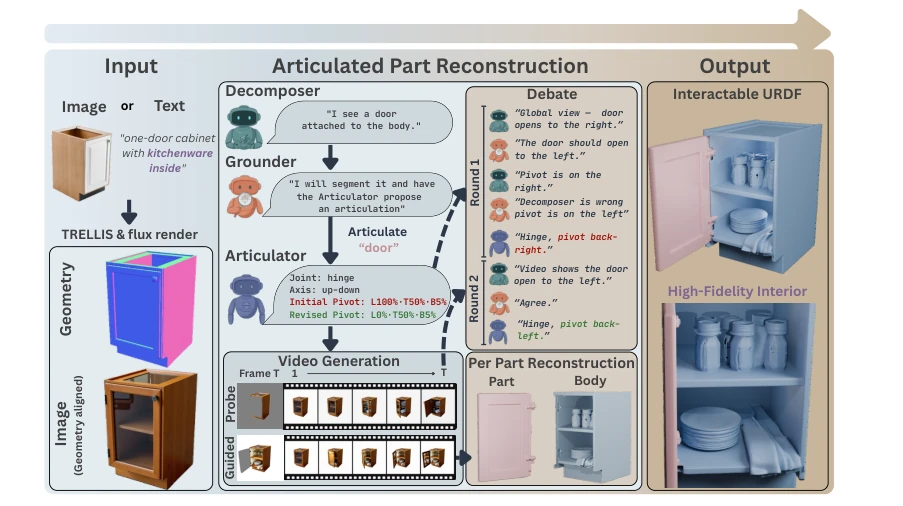
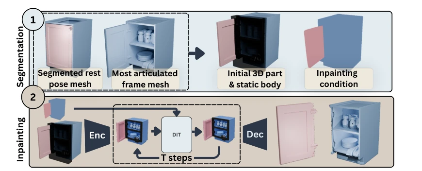
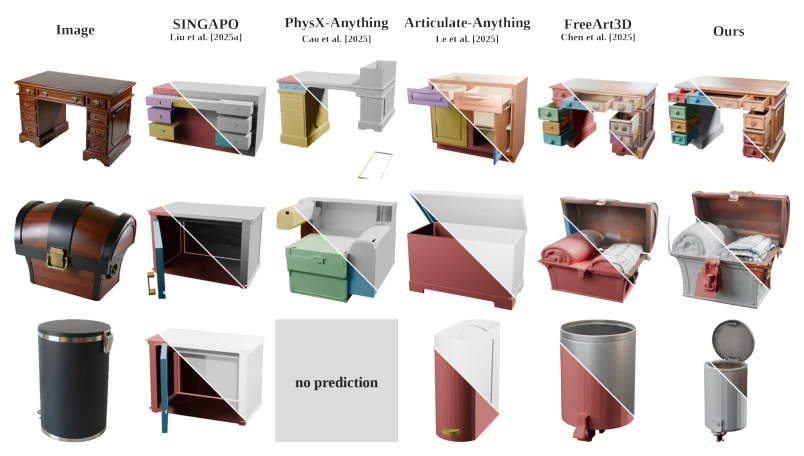
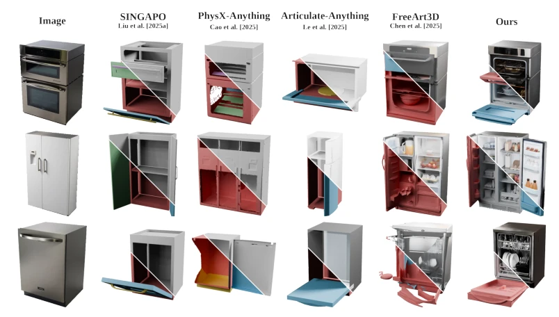

UnfoldArt: Zero-Shot Recovery of Full Articulated 3D Objects from Text or Image
Mohamed el amine boudjoghra, Ivan Laptev, Angela Dai abspdf
论文点评Review
这篇论文给单图生成可动 3D 物体加了个“辩论赛”滤镜，听起来很科幻。核心套路是用 VLM 智能体互相吵架（全局 vs 局部），再用视频生成器当裁判。优点是确实能挖出被遮挡的内部结构，这点比纯表面生成强，能输出 URDF 直接用于仿真；缺点是推理慢得离谱，一个物体要半小时到一小时，而且依赖视频先验，万一生成视频里门开反了，辩论机制能不能扛得住还是个问号。所谓的“辩论”本质是多轮提示工程，别指望真有什么逻辑推理，但能把关节参数猜准点确实有点东西，尤其是 OOD 场景下，比那些依赖固定资产库的方法灵活多了。
This paper adds a "debate competition" filter to single-image generation of animatable 3D objects, sounding very sci-fi. The core strategy involves VLM agents debating with each other (global vs. local), with a video generator acting as the referee. The advantage is indeed excavating occluded internal structures, which is superior to pure surface generation, and can output URDF directly for simulation; the disadvantage is that inference is ridiculously slow, taking half an hour to an hour per object, and it relies on video priors; if the door opens backwards in the generated video, whether the debate mechanism can withstand it remains a question mark. The so-called "debate" is essentially multi-turn prompt engineering; do not expect actual logical reasoning, but being able to guess joint parameters more accurately is indeed noteworthy, especially in OOD scenarios, being much more flexible than methods relying on fixed asset libraries.
研究动机Motivation
具身 AI 和 VR 需要可交互的 articulated 3D 物体，但现有方法卡在数据上。监督学习依赖 PartNet-Mobility 等数据集，规模仅约 2k 物体，泛化差（Cao et al. [2025], Liu et al. [2025a]）。无监督方法如 FreeArt3D 需要多视角输入（Chen et al. [2025]），或依赖固定资产库（Le et al. [2025]）。单图零-shot 恢复完整结构（含内部）仍是难题，现有方法无法在缺乏监督信号下可靠恢复关节和隐藏几何。特别是对于未见过的物体类别，基于检索或模板的方法完全失效，亟需一种不依赖特定训练数据且能恢复内部结构的通用方案，以支持更复杂的交互环境构建。
Embodied AI and VR require interactive articulated 3D objects, but existing methods are bottlenecked by data. Supervised learning relies on datasets like PartNet-Mobility, with a scale of only about 2k objects and poor generalization (Cao et al. [2025], Liu et al. [2025a]). Unsupervised methods like FreeArt3D require multi-view inputs (Chen et al. [2025]), or rely on fixed asset libraries (Le et al. [2025]). Single-image zero-shot recovery of complete structure (including internal) remains a challenge; existing methods cannot reliably recover joints and hidden geometry without supervision signals. Especially for unseen object categories, retrieval or template-based methods fail completely, urgently requiring a general solution that does not rely on specific training data and can recover internal structures to support the construction of more complex interactive environments.

Figure 1: UnfoldArt generates articulated 3D objects from a single text or image input, recovering both the external part structure and the high-fidelity interior geometry that becomes visible only under articulation. To achieve this, we propose a debate-driven agentic approach to articulated 3D reconstruction, combining hierarchical agent debate with a video generative prior that grounds articulation reasoning in concrete motion and exposes occluded interior geometry.
The process is divided into three steps: 1. Initialization: Use TRELLIS to generate initial mesh, Flux renders aligned images. 2. Agent Debate: Decomposer performs global reasoning, Grounder performs local segmentation, Articulator predicts joints. The first round uses global/local perspective divergence to correct parameters; the second round introduces generated video as external evidence to verify motion rationality. 3. Internal Recovery: Generate guidance video based on consensus joints, drive component motion to expose internal, separate components and body through 3D latent space inpainting, output URDF. Innovation lies in asymmetric debate mechanism (utilizing divergence rather than consensus) and dual use of video prior (evidence + geometric recovery). Video generator WAN-VACE is frozen, only used as conditional generation, avoiding fine-tuning. Use RePaint for latent space denoising, solve boundary blur problem, ensure integrity of internal geometry.

Figure 2: Method overview. Given an unposed image or a text prompt as input, we generate a TRELLIS Xiang et al. [2025a] mesh and a Flux Labs et al. [2025], Labs [2024] render that provide a spatial and photorealistic visually-grounded representation for our agentic reasoning. A hierarchy of three agents divides labor between global and local reasoning: a Decomposer reasons globally over parts and motion, a Grounder chooses a segmentation strategy and orchestrates the per-part articulation order, and an Articulator predicts the joint type, axis, and initial pivot. A two-round global- local debate then refines the prediction: the first round exploits whole-object–part disagreement, and the second grounds it in a freely generated video of the proposed motion, revising the pivot from initial (

Figure 3: Part reconstruction via 3D latent inpainting. The rest-pose mesh and mesh reconstructed from the maximum articulation frame in the guided video V art i enable reconstruction of each part, here visualized for one part (pink). Together, these meshes indicate part (pink) vs body (blue) components in an underlying voxel grid, considering the articulation sweep of the part. This provides an initial 3D segmented reconstruction, with only the voxels lying close to the boundary of part and body as ambiguous (black). After rendering this partial assignment to 2D as the inpainting condition (right), we encode it into latents and denoise using RePaint to jointly resolve the part-body boundary and complete the previously occluded interior to yield clean separated meshes.
Tested on three datasets: PartNet-Mobility, Objaverse-Household, and OOD. Compared with SINGAPO, PhysX-Anything, FreeArt3D, etc. Metrics cover geometric distance (dgIoU, dCD) and joint accuracy (Axis/Pivot Err). Results show highest joint accuracy on OOD (64.2%), geometric reconstruction comparable to supervised methods. Ablation shows two rounds of debate better than one round, video-guided reconstruction more accurate than surface segmentation. Limitation is inference time (13 minutes to 1 hour), small motions hard to capture. On PartNet-Mobility although not as good as SINGAPO overall, joint type accuracy is highest, proving generalization ability. Experiments show this method performs robustly on unseen categories, better than baselines relying on specific training distributions.

Figure 4: Qualitative results on Objaverse. On objects outside curated articulation datasets, supervised baselines (PhysX-Anything, SINGAPO) struggle to align with the input geometry, while FreeArt3D recovers plausible structures but lacks fine-scale details and can struggle with segmentation. Our method recovers faithful per-part geometry and plausible articulation across diverse categories.

Figure 5: Qualitative results on Partnet-Mobility. Our method remains on par with supervised baselines (Singapo, PhysX-Anything) performance on their in-domain data distribution, and produces more detailed and cleaner articulated reconstructions than the training-free FreeArt3D.
Figure 7: Noisy part segmentation from FLUX joint detection. FLUX generates images with high-saturation joint regions; connected components on the saturation maps are lifted to 3D to localize the joint. After removing the joint region, DBSCAN clustering on the remainder yields the noisy part segmentation used as input to our inpainting stage.